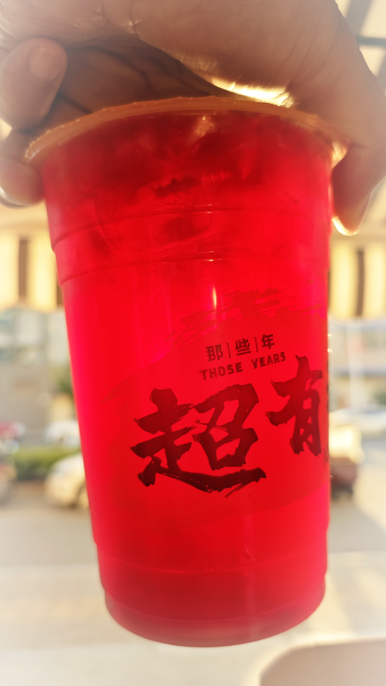

生活很累，美食很美
🎉生活中总会遇到种种不如意，每当此时，或许美食就是那所有不开心的解药😊👀
最后编辑时间：2024年5月30日
这是一个很不一样的生日
🎉今天发生了很多事情，由此可见我们中国人对于本命年的说法并非空穴来风，不过一切都会过去的，让我们忘却所有的不美好，腾出空间储存我们所有的多年以后再回首，或许会对今天有更正确的评价😊👀
最后编辑时间：2024年5月26日

家有猫鼠
🎉家里养的猫胆小又害羞，家里养的老鼠无耻且暴躁😊👀
最后编辑时间：2024年5月15日

日常随记
🎉孩子在一天天的长大，我也在一天天的变老😊👀
最后编辑时间：2024年5月4日

小说-佣兵天下
🎉这是我很喜欢的一本小说ヾ(≧▽≦*)o，所以上传到这里，主要是为了方便我自己重刷😊👀
最后编辑时间：2013年1月5日
小说-师士传说
🎉这也是我很喜欢的一本小说ヾ(≧▽≦*)o，上传到这里，方便自己能连贯的重听😊👀
最后编辑时间：2013年5月8日
小说跨平台跨设备版本测试
这里是为了测试跨平台跨设备效果与问题创建
最后编辑时间：2013年5月10日
小说-三国演义
🎉一本古典小说ヾ(≧▽≦*)o，人们都说，阅读这种小说是需要年龄支撑的😊👀
最后编辑时间：2013年10月10日
小说-仙逆
🎉一本网络小说ヾ(≧▽≦*)o，当年很火的一本书😊👀
最后编辑时间：2014年6月10日
儿童读物-伊索寓言
🎉知名的儿童读物，有了孩子以后，对现在动画片深感失望，好像自己做动画片给孩子看😊👀
最后编辑时间：2014年8月15日
周易
🎉想看懂，但是一直没能看懂，民族的精粹，奈何自己文化实在有限，可惜😊👀
最后编辑时间：2014年10月18日
奇谈怪论-喻世明言
🎉闲来无事打发时间的😊👀
最后编辑时间：2014年10月19日
儿童读物-安徒生童话
🎉又是一本知名的儿童读物，一直想用来做动画的😊👀
最后编辑时间：2015年9月22日
尚书
🎉这类书籍确实不适合我这种文化不高的人阅读，负荷太大，读起来太累😊👀
最后编辑时间：2015年11月1日
曾国藩家书
🎉很有名的一本著作，本来想摘抄来做家训的，但是貌似更适合自省😊👀
最后编辑时间：2015年11月21日
儿童读物-格林童话
🎉很不错的短片素材，我有很多想法想去尝试，但是又困难重重，我果然不是一个聪明人，但是为何我智商测试会有如此高的得分，难以理解😊👀
最后编辑时间：2016年3月10日
古典名著-水浒传
🎉古典名著，无需赘述。😊👀
最后编辑时间：2016年5月3日
古典名著-红楼梦
🎉古典名著，无需赘述。😊👀
最后编辑时间：2016年5月3日
古典名著-西游记
🎉古典名著，无需赘述。😊👀
最后编辑时间：2016年5月5日
聊斋志异
🎉看电视很起劲，但是看书却是兴味索然。😊👀
最后编辑时间：2016年6月10日
警世通言
🎉所谓的历史，也就是一代又一代人的轮回，科技在进步，但是人性好像并没有😊👀
最后编辑时间：2017年3月3日
醒世恒言
🎉三言二拍，我都没能坚持看完。。。😊👀
最后编辑时间：2017年3月3日
诗经
🎉诗经啊，还是喜欢这种的，朗朗上口的😊👀
最后编辑时间：2018年10月1日
资治通鉴
🎉大部头，看不下去，完全看不下去，看来我实在没有从商从政的半点天赋。😊👀
最后编辑时间：2018年10月5日
道德经
🎉嘿嘿，好多版本的，朗朗上口的文字，总能在人生的每个阶段都触动你一下😊👀
最后编辑时间：2020年8月10日